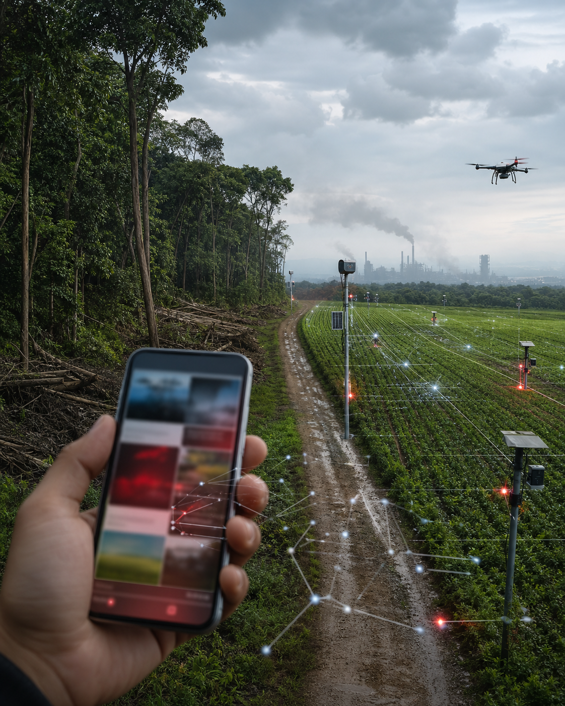

Você sabia? Nova IA agrícola estaria destruindo florestas e salvando o planeta ao mesmo tempo
Texto viral afirma que sensores inteligentes aumentam a poluição em todo o país, mas se contradiz ao dizer que a mesma tecnologia reduziu tudo a zero em 24 horas.

A notícia tenta parecer urgente, mas não mostra estudo, data confiável nem especialista identificável.
Uma suposta reportagem que circula em feeds personalizados diz que uma "nova tecnologia agrícola com inteligência artificial" estaria destruindo florestas, contaminando rios e aumentando a poluição em todo o país. No mesmo texto, porém, a ferramenta é chamada de "solução verde definitiva".
A publicação diz se basear em "fontes próximas ao algoritmo", sem informar nomes, instituições ou qualquer link para pesquisa. Mesmo assim, apresenta números enormes: em um parágrafo, a IA teria causado 73% do desmatamento; no parágrafo seguinte, teria reflorestado 81% das áreas atingidas.
"A tecnologia polui mais do que nunca, mas também eliminou a poluição antes que ela existisse", afirma o texto viral, sem explicar a contradição.
O conteúdo também parece mudar conforme o perfil do leitor. Para quem busca notícias sobre empregos, a chamada fala em máquinas substituindo trabalhadores. Para quem pesquisa clima, o título destaca fumaça, rios escuros e florestas desaparecendo. Para quem assiste vídeos de tecnologia, a mesma notícia vira propaganda de uma inovação milagrosa.
Trechos que se contradizem
Diz que todos os especialistas concordam, mas duas linhas depois admite que nenhum especialista foi ouvido.
Afirma que a poluição dobrou em 24 horas e, logo abaixo, que as emissões chegaram a zero no mesmo dia.
Cita um estudo "publicado ontem" que, no rodapé, aparece com data marcada para 2031.
Como a IA deixa o boato mais convincente
Observa sinais: tempo de tela, cliques, buscas e temas que chamam sua atenção.
Ajusta a emoção: troca palavras neutras por medo, urgência e promessa de exclusividade.
Entrega versões: cada pessoa recebe um título mais parecido com aquilo que ela tende a acreditar.
Antes de compartilhar
- Procure a fonte original e veja se ela realmente existe.
- Compare a notícia com outros veículos confiáveis.
- Desconfie de números enormes sem link, método ou data.
- Leia além da manchete, principalmente quando ela apela para medo.